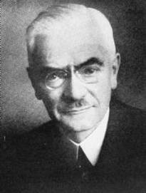

|  |
Bielschowsky's head tilt test = A test for palsy of the superior oblique muscle caused by damage to the IVth cranial nerve.
Alfred Bielschowsky was born to a Jewish family in Namslau, Lower Silesia. He graduated from the Königliches Katholisches Gymnasium zu Glatz in 1889 and then entered the study of medicine at the university of Breslau. He soon moved on to Heidelberg, where he graduated in 1891. During the first terms of clinical education he was influenced by the lectures of Theodor Leber (1840-1917).
He spent his hospital service and assistant period at the university eye clinic in Leipzig, where he received education in ophthalmology under Carl Hubert Sattler (1880–) and in 1900 was habilitated as Privatdozent in ophthalmology. In Leipzig he worked under the physiologist Ewald Hering, who headed the physiological institute next to the eye clinic. In the physiological institute he became acquainted with Frans Bruno Hofmann (1869-1926), and the two made fundamental work on the fusion and cyclodeviation in obliquus superior pareses, and congenital hyperfunction of the obliquus superior. At this time he also developed a lasting friendship with his colleague Emil Krückmann (1865-1944).
Following his habilitation, Bielschowsky proved himself an outstanding university teacher and scientist, becoming ausserordentlicher professor in 1906. From 1906 to 1912 he was head physician in the Leipzig eye clinic. In Leipzig, Bielschowsky married Frieda Johanna Blume, the daughter of an advisor to the supreme court , the Reichsgericht. They had three children
In 1912 he was called to the chair of ophthalmology at the University of Marburg, heading the university eye clinic.
During World War I, Bielschowsky was busy attending to severely wounded and blinded. In 1915 he established a 35 bed ward for soldiers who had been blinded by shell splinters or poison gas. Realising that medical rehabilitation was not sufficient, he hired the young student Carl Strehl to teach the blinded soldiers Braille, a system of reading and writing that enables the blind to see by using their sense of touch. It is named for the French pedagogue Louis Braille (1809-1852). His wife, too, participated in the education of the blinded.
It is to a large degree due to his efforts and organisational skills that the Deutsche Blindenstudienanstalt was established in Marburg. With Strehl, Bielschowsky founded the "Verein blinder Akademiker Deutschlands" (the Association of Blinded German Academicians.
In 1923 he moved to the chair in Breslau. It was here, in 1932, he published his epoch-making work Die Lähmungen der Augenmuskeln, still a standard work og motility disturbances of the muscles of the eye.
For his contributions during the war, Bielschowsky was honoured with the Iron Cross for War Aid (Eisernes Kreuz der Kriegshilfe) from Reichsmarschall Paul von Hindenburg, and was awarded the title of Geheimer Medizinalrat (Privy Medical Counsellor) by Emperor Wilhelm II. However, all this was of no significance when the National Socialist Party – Nationalsozialistische Deutsche Arbeiterpartei, the Nazis – came to power in 1933. Because of his Jewish origin he was fired as head of the Breslau eye clinic already the following year.
In 1936, Bielschowsky emigrated to the United States of America and settled in Dartmouth, New Hampshire. In America, his knowledge and outstanding didactic abilities were received with enthusiasm. Adelbert Ames helped him in having a new beginning at the Dartmouth College in Hannover, New Hampshire, and in 1937 the Dartmouth Eye Institute was established for him. He remained head of the institute until his death in 1940.
In Germany, the Bielschowsky-Gesellschaft für Schielforschung is named for him.
His main field of work was the physiology and pathology of space perception (Raumsinn) and the movements of the eyes. He was a collaborator in the Handbuch der gesamten Augenheilkunde by Graefe-Saemisch.
Bibliography:
Die Lähmungen der Augenmuskeln. 1932.
Angelika Katharina Kaufmann:
Alfred Bielschowsky (1871-1940). Ein Leben für die Strabologie. 1994. 225 pages.
G. K. Von Noorden:
Historical Review: Alfred Bielschowsky and Hermann Burian.
Binocular Vision & Eye Muscle Surgery Quarterly, 10:229.